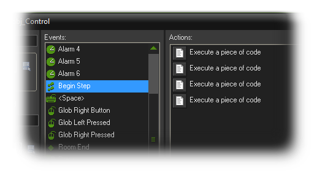

Then the code block will now have that as it's description, as shown in the following image :

When working in collaboration with other people, when dealing with a large project, or even just for your own refrence and debugging, leaving comments in your codes and scripts is very important.
In GameMaker:Studio you have various mechanisms to help you leave notes and comments about code sections and even whole blocks of code that can be seen in the event list of the
object that you are currently editing, and in this way you can leave notes to yourself and to your colleagues, or to explain a particularly tricky piece of code, or even just leave a reminder about what something does.
the first thing you can do is leave a short comment using // before the text. For example :
//initialise variables
sr = 10;
hp = 100;
You may also leave multiline comments, to give credit, to omit a complete section of code for debugging, or even to explain the arguments of a script. For that you can use /* ... */ like this :
/*
usage:
diff = angle_difference(angle1,angle2);
angle1 first direction in degrees, real
angle2 second direction in degrees, real
returns: difference of the given angles in degrees, -180 to 180
GMLscripts.com
*/
{
return ((((argument0 - argument1) mod 360) + 540) mod 360) - 180;
}
Finally, when using the code blocks in an object, it can be quite confusing, especially if you have many of them and any given event may end up looking like this :

However if the very first line of your code has a comment that is started with /// then that comment will appear as the name of that code block. So, for example, if you have this :
///Check position
Then the code block will now have that as it's description, as shown in the following image :